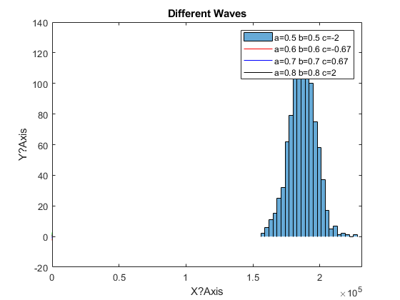
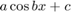

Publishing Documents with MATLAB
Contents
Question 1
The purpose of this code is to demonstrate the use of the MATLAB publishing tools. As you can see from this, by following this style of starting a section of text with two %% and a space then text and following it with any number of lines of text (each beginning with %) you are able to insert paragraphs into you code and very simply switch to writing code.
steps=4; resolution=1e6; f=@(a,b,c,x)a.*cos(b.*x)+c; A=linspace(0.5,0.8,steps); B=linspace(0.5,0.8,steps); C=linspace(-2,2,steps); X=linspace(1,7,resolution); Y=zeros(steps,resolution); clrs=['r', 'b', 'k', 'g']; figure(1) hold on for i=1:steps Y(i,:)=f(A(i),B(i),C(i),X); plot(X,Y(i,:),clrs(i)) 2 end xlabel('X?Axis') ylabel('Y?Axis') title('Different Waves') legend(['a=',num2str(A(1),2),' b=',num2str(B(1),2),' c=',num2str(C(1),... 2)],['a=',num2str(A(2),2),' b=',num2str(B(2),2),' c=',num2str(C(2),... 2)],['a=',num2str(A(3),2),' b=',num2str(B(3),2),' c=',num2str(C(3),... 2)],['a=',num2str(A(4),2),' b=',num2str(B(4),2),' c=',num2str(C(4),2)])
ans =
2
ans =
2
ans =
2
ans =
2
 Equations
You are even able to have equations written in your text, formatted as you would in a LaTeX document. The equation used before is:

You could even write it inline .